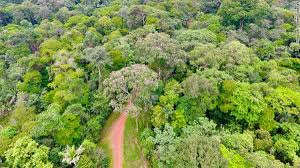

Penjelasan Umum
Bioma hutan hujan tropis merupakan bioma yang berada di wilayah sekitar garis khatulistiwa seperti Indonesia, Brasil, dan Kongo. Bioma ini memiliki suhu hangat sepanjang tahun dan curah hujan yang sangat tinggi. Hutan hujan tropis dikenal sebagai paru-paru dunia karena menghasilkan banyak oksigen. Bioma ini menjadi habitat bagi ribuan spesies flora dan fauna. Selain itu, hutan hujan tropis memiliki peran penting dalam menjaga keseimbangan iklim bumi.
Ciri-Ciri Bioma
- Curah hujan sangat tinggi sepanjang tahun
- Suhu hangat dan lembab
- Pohon tumbuh sangat tinggi dan rapat
- Memiliki biodiversitas tinggi
- Tanah cenderung lembab dan subur
Jenis Bioma
- Hutan hujan tropis dataran rendah
- Hutan hujan pegunungan
- Hutan rawa tropis
Flora dan Fauna
Flora yang hidup di hutan hujan tropis antara lain pohon meranti, rotan, anggrek, dan pakis. Fauna yang hidup di dalamnya meliputi orangutan, harimau, burung cendrawasih, monyet, dan berbagai jenis reptil.